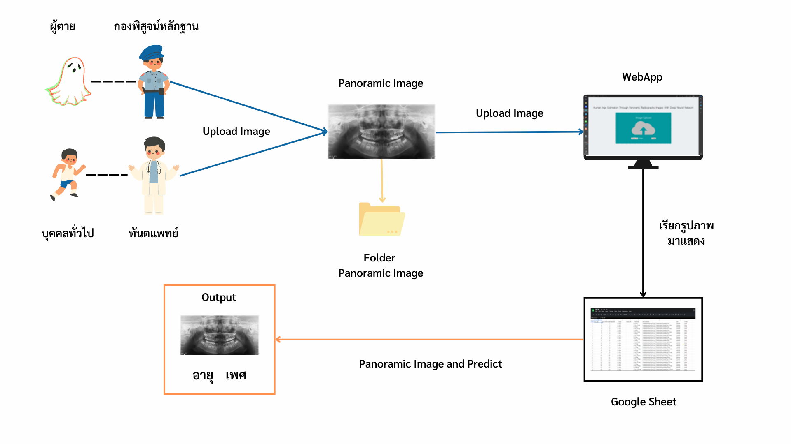

A Study of Thermal Comfort in Buildings
Using Data Mining: A Case Study in
Krung Thep Aphiwat Central Terminal Station


Example Results: WebApp(Prototype)
Input - Output
Abstract

สภาวะน่าสบาย (Thermal Comfort) หมายถึง ช่วงอุณหภูมิและความชื้นของอากาศที่ทำให้คนรู้สึกสบาย ซึ่งค่าของอุณหภูมิ
และความชื้นที่ทำให้รู้สึกสบายจะแปรเปลี่ยนไปตามลักษณะภูมิประเทศ สภาพแวดล้อม และความคุ้นชินที่มีต่อสภาพอากาศ
(อรรถนา วสุวัฒนา, 2563) และสภาวะน่าสบายอาจแตกต่างกันอย่างมาก ระหว่างบุคคล และขึ้นอยู่กับปัจจัยต่างๆ
เช่น กิจกรรมที่ทำ เสื้อผ้า น้ำหนักตัว เป็นต้น
หลายปีที่ผ่านมามีการศึกษาเกี่ยวกับสภาวะน่าสบายเพิ่มมากขึ้น โดยจากการทบทวนวรรณกรรมที่เกี่ยวข้องกับการศึกษาสภาวะน่าสบาย
ส่วนใหญ่จะเลือกศึกษาสภาวะน่าสบายภายในอาคาร เช่น การศึกษาสภาวะน่าสบายในโบสถ์ (ศศิธร, 2560) การศึกษาสภาวะน่าสบาย
ในที่พักอาศัย (Qian Chai et al., 2020) การศึกษาสภาวะน่าสบายในห้องสมุด (Ge Song et al., 2022) เป็นต้น
หากแต่ยังไม่มีการศึกษาเกี่ยวกับสภาวะน่าสบายภายในสถานีรถไฟฟ้าในประเทศไทย
การศึกษาเกี่ยวกับสภาวะน่าสบายภายในสถานีรถไฟฟ้าสามารถนำไปประยุกต์ใช้กับการออกแบบสถานีรถไฟฟ้า
โดยสถาปนิกหรือผู้ออกแบบ เพื่อใช้เป็นแนวทางและเป็นเครื่องช่วยในการตัดสินใจเปรียบเทียบในการออกแบบพัฒนาสถานีรถไฟฟ้า
เพื่อให้เหมาะสมต่อสภาวะน่าสบายของผู้ใช้บริการสถานีรถไฟฟ้าต่อไป ดังนั้นคณะผู้วิจัยจึงได้ทำการศึกษาปัจจัยที่ส่งผลต่อ
สภาวะน่าสบายของปัจเจกบุคคล และสร้างตัวแบบทำนายสภาวะน่าสบายจากปัจจัยด้านสภาพแวดล้อมและปัจจัยส่วนบุคคลของ
ผู้ใช้บริการสถานีรถไฟฟ้าโดยการใช้เทคนิคการทำเหมืองข้อมูล
The website template was borrowed from Michaël Gharbi.